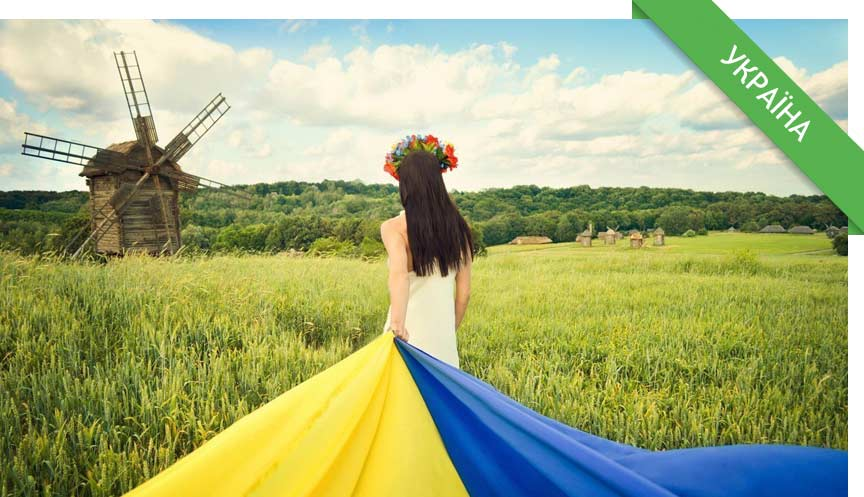

Зміст
Цікаві факти про Україну

Популярні та маловідомі цікаві факти про Україну
Борщ як нематеріальна спадщина – 1 липня 2022 року ЮНЕСКО внесла борщ до Списку нематеріальної культурної спадщини, яка потребує охорони.
Україна — одна з найосвіченіших націй у світі. Країна посідає 4-те місце у світі за кількістю найосвіченішого населення. 99,4% українців у віці 15 років і старше вміють читати й писати. 70% дорослих українців мають середню або вищу освіту. Навіть всім відомі чемпіони у важкій вазі Віталій та Володимир мають докторські ступені.
Понад 50 згадок у Книзі рекордів Гіннеса. Наприклад, Анатолій Бойко з Володимира-Волинського, відомий як “український Фаберже“, є одним з останніх українських рекордсменів. Він за допомогою крихітних дірочок перетворює звичайні пташині яйця на витвори мистецтва. У квітні 2021 року художник проткнув 52 700 дірочок у гусячому яйці та 33 300 дірочок у курячому яйці, встановивши два світові рекорди відповідно.
Вулиця Хрещатик у Києві — найкоротша і водночас найширша головна міська вулиця у світі. Її довжина становить 1,2 км.
Запорізька Січ — одна з перших демократичних систем у світі. Заснована в середині 16 століття, сьогодні ця організація визнана однією з перших демократій у світі.
Третя за красою мова у світі. У 1934 році українська була визнана другою наймелодійнішою мовою світу, поступаючись лише італійській.
Природні цікаві факти про Україну
Україна є найбільшою за площею країною в Європі. Загальна площа України становить 603,55 кв. км.
В Україні, неподалік міста Хуст в Закарпатській області, розташована Долина нарцисів — захоплююче і красиве місце, яке є великим природним заповідником, повністю вкритим цими квітами. Цей заповідний масив, розміщений в урочищі Кіреші, знаходиться за 4 км на схід від Хуста і перебуває під охороною ЮНЕСКО.
Україну часто називають “житницею Європи”, оскільки вона має ідеальні умови для вирощування пшениці і є великим виробником зерна.
Історичні цікаві факти про Україну
Одним з популярних фактів історії України є історія її мешканців. Артефакти трипільської культури свідчать про те, що люди жили на території сучасної України вже у п’ятому столітті до нашої ери.
Відкриття першого університету у Східній Європі. Острозька академія — найстаріший науково-освітній заклад в Україні та перший вищий навчальний заклад у Східній Європі. Слов’яно-греко-латинська академія була заснована в Острозі в 1576 році князем Костянтином-Василем Острозьким.
Львів має найбільшу кількість кафе на душу населення. Місто може похвалитися десятками закладів, де готують чудову каву та гарячий шоколад, а також виготовляють різноманітні солодощі на місці.
Музичні цікаві факти про Україну
Всесвітньо відома неаполітанська пісня “O Sole Mio” була написана Едуардо Ді Капуа у 1898 році в Одесі. Він перебував у південному порті зі своїм батьком, скрипалем, коли його вразив прекрасний світанок на Чорному морі. Слова до цієї пісні невдовзі написав поет Джованні Капурро.
“Carol of the Bells”, популярна мелодія під час свят, є українською народною піснею. “Carol of the Bells” або “Ring of Christmas Bells” за мотивами старовинної української народної пісні “Щедрик” Миколи Леонтовича.
Найдовший духовий інструмент у світі — українська трембіта. Він занесений до Книги рекордів Гіннеса. Трембіта — це дерев’яна труба, довжина якої коливається від 2,5 до 8 метрів, а діаметр — близько 30 мм.